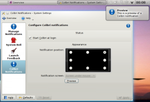

pub_date: 2010-08-05 21:00:00 +01:00
public: yes
tags: ["kde","colibri","notifications","plasma"]
title: "Return of the hummingbird... Colibri 0.2.1 is out!"
I just released version 0.2.1 of Colibri, the passive alternative to KDE4 plasma notifications. Here are the most important changes.
On the notifications themselves:
- Consecutive notifications are now merged. This is quite handy when someone sends you three consecutive messages on IRC for example: instead of showing three bubbles on after the other, the current notification will grow and integrate the next message. This only happen for notifications from the same application, with the same title.
- The notification bubble follows the Plasma look more closely: it features the same background halo behind text and can take advantage of blurred background when running on KDE 4.5.
The configuration module has been improved as well:
- It is now possible to select on which monitor the notifications will appear.
- A "Preview" button has been added.
- It is easier to setup Colibri on your machine: the configuration module will warn you if another notification system is running and let you start Colibri if it is not running.

You can get the latest release from Colibri KDE-Apps page. I hope you like it!

{kind=link}